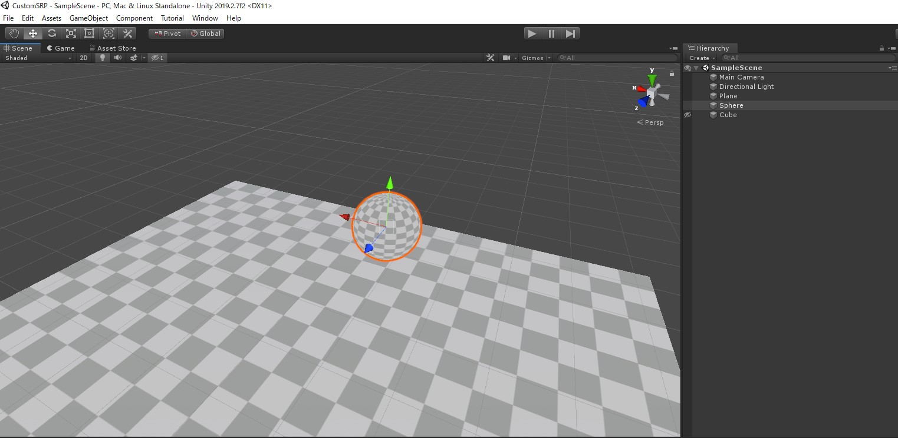

最小限のSRPを組んでみる
from Unity 2019.2.7f2
LWRPのコードを見ながらやりたかったので、新規作成でLWRPのテンプレートプロジェクトを作成
SRPを構成する大きな要素は３つ
Scriptable Render Pipeline Asset 使用するSRPの設定情報を格納したアセット
RenderPipelineAssetクラスを継承して作成
レンダーパイプラインのGraphic設定を盛り込んでいく
アセットとして生成して、Project SettingsのGraphicsに設定することで
Unityがレンダーパイプラインを呼び出すようになる
ちなみに、これがNoneの場合はビルドインレンダーパイプラインが使われる。Scriptable Render Pipeline レンダーパイプライン本体
RenderPipelineクラスを継承して作る
Renderメソッドをオーバーライドすると、レンダリング時にUnityが呼んでくれる各種Shader 注意点として、今までのシェーダー(Standardや自分で作ったShaderも含む)は全て使用できなくなる
そのため、レンダーパイプライン専用のカスタムシェーダーを自前で用意する必要がある 既存のシェーダー資産の移行ついては後述するが、
基本的にはシェーダーにLightModeを指定するだけでとりあえず動く
(機能が足りない or 特殊なレンダーパイプラインじゃないかぎり)
なお、LWRPやHDRPにはStandardシェーダー相当の物が予め用意されている（Litシェーダー）
ということで最小限のSRPを作る、今回はCustomRenderPipelineという名前で作成
CustomRenderPipelineAsset
// CustomRenderPipelineAsset.cs
#if UNITY_EDITOR
using System;
using System.Collections;
using System.Collections.Generic;
using UnityEditor;
using UnityEditor.ProjectWindowCallback;
#endif
using UnityEngine.Rendering;
using UnityEngine;
/// <summary>
/// 何もしないカスタムレンダリングパイプライン設定
/// </summary>
public class CustomRenderPipelineAsset : RenderPipelineAsset, ISerializationCallbackReceiver
{
/// <summary>
///
/// </summary>
[System.Diagnostics.CodeAnalysis.SuppressMessage("Microsoft.Perfomance", "CA1812")]
internal class CreateCustomPipelineAsset : EndNameEditAction
{
public override void Action(int instanceId, string pathName, string resourceFile)
{
AssetDatabase.CreateAsset(Create(), pathName);
}
}
/// <summary>
/// メニューに出すやつ
/// </summary>
[MenuItem("Assets/Create/Rendering/Custom Render Pipeline/Pipeline Asset", priority = CoreUtils.assetCreateMenuPriority1)]
static void CreateCustomPipeline()
{
ProjectWindowUtil.StartNameEditingIfProjectWindowExists(0, CreateInstance<CreateCustomPipelineAsset>(),
"CustomRenderPipelineAsset.asset", null, null);
}
/// <summary>
/// アセット生成
/// </summary>
/// <returns></returns>
public static CustomRenderPipelineAsset Create()
{
var instance = CreateInstance<CustomRenderPipelineAsset>();
return instance;
}
/// <summary>
/// 多分要らない(ISerializationCallbackReceiver)
/// </summary>
public void OnAfterDeserialize()
{
}
/// <summary>
/// 多分要らない(ISerializationCallbackReceiver)
/// </summary>
public void OnBeforeSerialize()
{
}
/// <summary>
/// パイプラインの生成、ここでカスタムのパイプラインのインスタンスを作る
/// </summary>
/// <returns></returns>
protected override RenderPipeline CreatePipeline()
{
return new CustomRenderPipeline(this);
}
}
LWRPに倣ってISerializationCallbackReceiverインターフェースを実装しているが、今の所は多分必要ない
ActionメソッドのオーバーライドでUnityがレンダリングするときに必要なレンダリングパイプラインを生成する処理を書く
CustomRenderPipeline
// CustomRenderPipeline.cs
using System;
using Unity.Collections;
#if UNITY_EDITOR
using UnityEditor;
#endif
using UnityEngine.Rendering.PostProcessing;
using UnityEngine.Experimental.GlobalIllumination;
using Lightmapping = UnityEngine.Experimental.GlobalIllumination.Lightmapping;
using UnityEngine.Rendering;
using UnityEngine;
/// <summary>
/// 何もしないカスタムレンダリングパイプライン
/// </summary>
public sealed partial class CustomRenderPipeline : RenderPipeline
{
/// <summary>
///
/// </summary>
const string k_RenderCameraTag = "Render Camera";
/// <summary>
/// コンストラクタ
/// </summary>
/// <param name="asset"></param>
public CustomRenderPipeline(CustomRenderPipelineAsset asset)
{
}
/// <summary>
/// レンダーコールバック
/// </summary>
/// <param name="context"></param>
/// <param name="cameras"></param>
protected override void Render(ScriptableRenderContext context, Camera[] cameras)
{
// コンテキストの開始
BeginFrameRendering(context, cameras);
// 事前処理...
SortCameras(cameras);
// 全部のカメラをぐるぐる
foreach (Camera camera in cameras)
{ // カメラ毎のレンダリング
BeginCameraRendering(context, camera);
RenderSingleCamera(context, camera);
EndCameraRendering(context, camera);
}
// コンテキストの終了
EndFrameRendering(context, cameras);
}
/// <summary>
/// カメラソート
/// </summary>
/// <param name="cameras"></param>
void SortCameras(Camera[] cameras)
{
Array.Sort(cameras, (lhs, rhs) => (int)(lhs.depth - rhs.depth)); // カメラのDepthでソートする（ビルドインパイプライン基準）
}
/// <summary>
/// カメラレンダリング
/// </summary>
/// <param name="context"></param>
/// <param name="camera"></param>
public static void RenderSingleCamera(ScriptableRenderContext context, Camera camera)
{
context.SetupCameraProperties(camera);
if (!camera.TryGetCullingParameters(false, out var cullingParameters)) // カリングパラメータを取得？
return;
#if UNITY_EDITOR
string tag = camera.name;
#else
string tag = k_RenderCameraTag;
#endif
CommandBuffer cmd = CommandBufferPool.Get(tag); // コマンドバッファを取得
using (new ProfilingSample(cmd, tag))
{
// カリング処理
CullingResults cullResults = new CullingResults();
cullResults = context.Cull(ref cullingParameters);
// レンダリングターゲットのバッファをクリア
cmd.ClearRenderTarget(true, false, Color.black);
context.ExecuteCommandBuffer(cmd); // コマンドバッファ実行
// Opaque(不透明オブジェクト)
SortingSettings sortingSettings = new SortingSettings(camera) { criteria = SortingCriteria.CommonOpaque };
var drawingSettings = new DrawingSettings(new ShaderTagId("CustomRenderPipeline"), sortingSettings);
var filterSettings = new FilteringSettings(
new RenderQueueRange(0, (int)RenderQueue.GeometryLast),
camera.cullingMask
);
// レンダリング
context.DrawRenderers(cullResults, ref drawingSettings, ref filterSettings);
}
// コマンドバッファのリリース
CommandBufferPool.Release(cmd);
// コンテキストをSubmit
context.Submit();
}
}
コンテキストと全てのカメラが渡されるので、好きに描画して良い
描画に関してはコマンドバッファも取れるが、
ある程度使う機能をまとめたヘルパーが用意されているので、主にそれを利用する
今回はOpaque（不透明オブジェクト）のみの対応 不透明オブジェクトは通常「手前から奥」に描画すると効率が良いので、描画順をソートする
SortingSettingsでcriteriaをCommonOpaqueにすると手前から奥にソートしてくれる設定が生成できる
これをDrawingSettingsに投げる事で描画に必要な設定が生成できる
このときに設定するShaderTagIdというのがシェーダー側で指定するLightModeと一致しなければならない
一致するLightModeのシェーダーパスが描画対象になる
（今回は1パスのみだが、LightModeを複数用意することでマルチパスレンダリングをすることができる）
filterSettingsは描画対象になるマテリアルに設定しているRender Queueの範囲
（GeometryLast=2500）
カメラ側のカリングマスクも含めて描画するオブジェクトフィルタ設定を生成する
context.DrawRenderersにカリング、描画設定、フィルタ設定を渡すことで対象のオブジェクトが描画される
この場合はRenderQueueが2500以下の”CustomRenderPipeline”と設定されたLightModeのシェーダーパスを手前から奥にDrawする
CustomUnlitShader
// CustomUnlitShader.shader
Shader "CustomRenderPipeline/CustomUnlitShader"
{
Properties
{
_MainTex ("Texture", 2D) = "white" {}
}
SubShader
{
Tags { "RenderType"="Opaque" }
LOD 100
Pass
{
Tags { "LightMode"="CustomRenderPipeline" }
CGPROGRAM
#pragma vertex vert
#pragma fragment frag
// make fog work
#pragma multi_compile_fog
#include "UnityCG.cginc"
struct appdata
{
float4 vertex : POSITION;
float2 uv : TEXCOORD0;
};
struct v2f
{
float2 uv : TEXCOORD0;
UNITY_FOG_COORDS(1)
float4 vertex : SV_POSITION;
};
sampler2D _MainTex;
float4 _MainTex_ST;
v2f vert (appdata v)
{
v2f o;
o.vertex = UnityObjectToClipPos(v.vertex);
o.uv = TRANSFORM_TEX(v.uv, _MainTex);
UNITY_TRANSFER_FOG(o,o.vertex);
return o;
}
fixed4 frag (v2f i) : SV_Target
{
// sample the texture
fixed4 col = tex2D(_MainTex, i.uv);
// apply fog
UNITY_APPLY_FOG(i.fogCoord, col);
return col;
}
ENDCG
}
}
}
UnityのビルドインシェーダーのUnlitシェーダーに手を加えたもの
パスに”LightMode”=“CustomRenderPipeline”を追加するだけ
これらを用意したら
Assets/Create/Rendering/Custom Render Pipeline/Pipeline Asset
でRender Pipeline Assetを生成して
Project SettingsのScriptable Render Pipeline Settingsに設定
適当なマテリアルを作って、CustomUnlitShaderを指定すると
SRPを通したレンダリング結果がSceneに描画される
